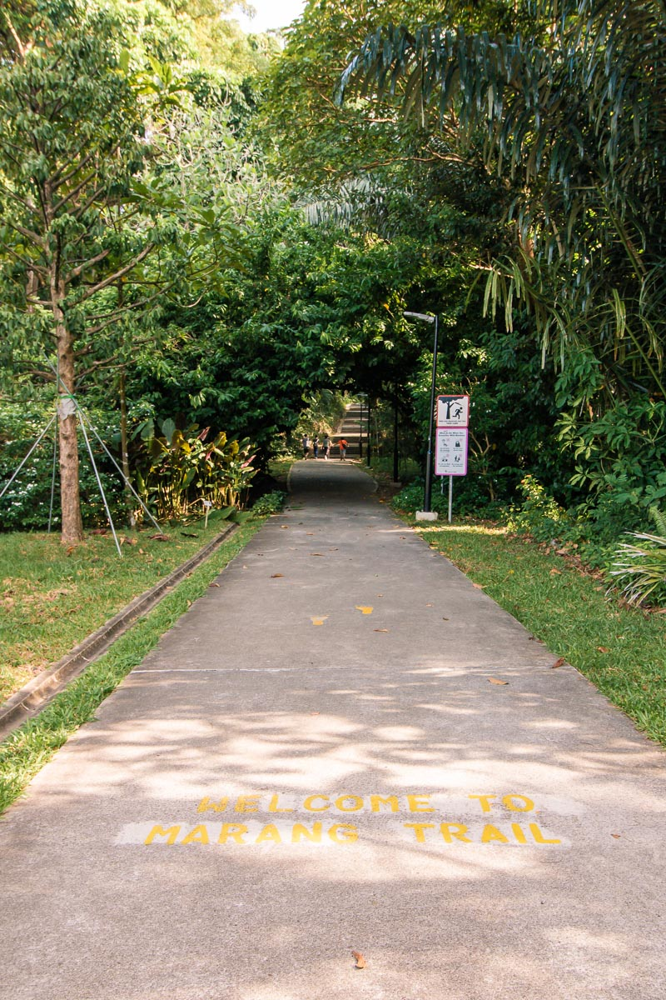

The Marang Trail
Are you feeling cooped up at home because of the pandemic? Are you craving adventure outdoors? Well...look no further! The Marang Trail is here to offer you an unforgettable outdoor experience!
The Marang Trail is a hiking trail part of The Southern Ridges. Immerse yourself in nature as you walk/jog along this trail and escape from the hustle and bustle of city life!
Directions
The Marang Trail is incredibly accessible with the starting point being conveniently located at Harbourfront MRT station exit D
After that, this trail brings you to the peak of Mount Faber, followed by the iconic Henderson Waves and finally the famous Forest Walk.
Things to do:
Apart from being a wonderful walking/running trail, The Marang Trail also boasts a myriad of beautiful flora and fauna for you to admire!
1. Walk/Jog
The Marang Trail is a great path for walking or jogging and is estimated to be of a easy to moderate level.
2. Bird Watching
Keep a look out for the different species of birds which reside in the trees lining the trail. If you're lucky, you might spot birds such as the 'Greater Racket-tailed Drongo' or the 'Black-naped Oriole'.
3.Admire the plants
This trail is home to lush greenery and many different flora which will amaze you! Rubber Trees and Angsanas are common in this area. Try to spot the Saga Tree with its famous bright-red seeds that are popularly collected for use in jewellery and artwork.
Map
(2) Mount Faber
(3) Henderson Waves
(6) Forest Walk
Click on (2), (3) & (6) to find out more about these locations!